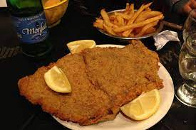

Milanesa

Foto de milanesa bien argenta
El que diga que la milanesa es italiana hay que colgarlo en una plaza y que se transmita por twitch ¡Hay que ser hijo de puta!
Ingredientes
- 4 Huevos
- 2 dientes de ajo
- Perejil picado
- Sal y pimienta, a gusto
- Pan rallado
- 1 kilo de nalga o peceto para milanesa
Pasos
- Pelar los ajos y picar junto con el perejil.
- Colocar los huevos en un bowl y batir hasta disolverlos bien. Luego agregar el perejil, los ajos y condimentar con sal y pimienta.
- Colocar la carne en la mezcla anterior, deje unos minutos, retirar y pasar por pan rallado.
- En una sartén con abundante aceite caliente freír las milanesas. Retirar y escurrir en papel absorbente.
Asi concluimos con unas de las comidas mas clasicas de la Argentina. Nadie puede morir sin probar una milanesa!